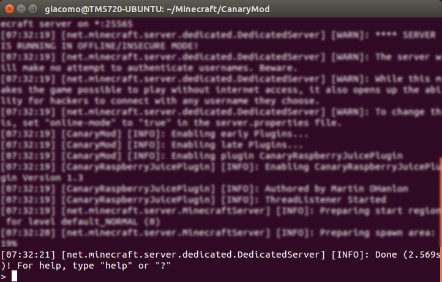
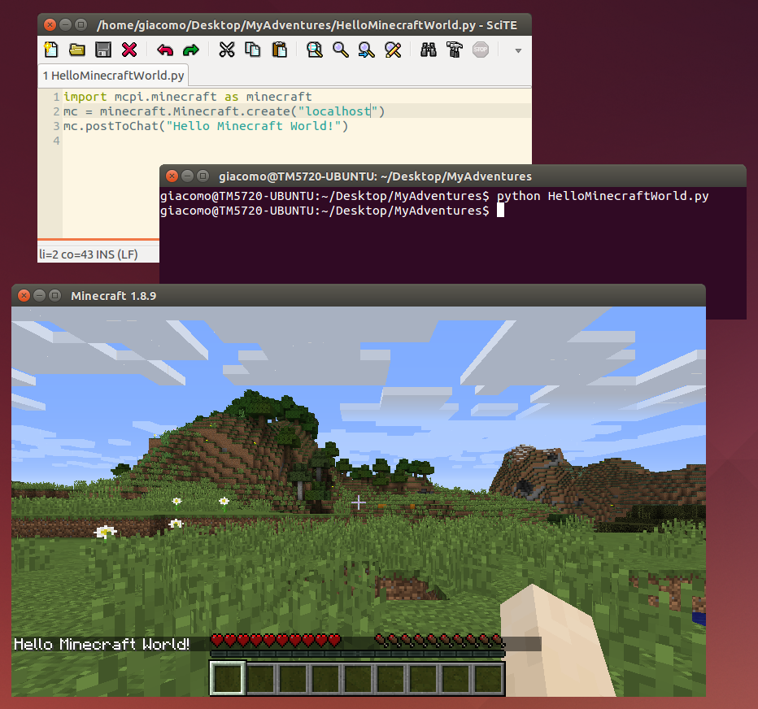

risorse | programmare minecraft in python
Per programmazione in Minecraft si intende un sistema di gioco nel quale le azioni del giocatore non vengono comandate attraverso il mouse e la tastiera, ma specificandole come sequenze di istruzioni di un particolare linguaggio di programmazione — Java, JavaScript, Lua, Python, … Il vantaggio è che con poche istruzioni di codice è possibile ottenere artefatti la cui costruzione manuale richiederebbe invece parecchio tempo.
Esiste una versione di Minecraft che supporta nativamente la programmazione Python: è quella predisposta per la scheda didattica Raspberry Pi, la cosiddetta Minecraft: Pi Edition. Gli svantaggi principali di questa soluzione sono due: il primo è la necessità di dotarsi di una Raspberry Pi, il secondo è che la versione di Minecraft ad essa dedicata, pur essendo gratuita, non è aggiornatissima.
Con relativamente poco sforzo è possibile replicare un ambiente analogo su PC utilizzando la versione standard di Minecraft (quella a pagamento). In rete si trovano diversi tutorial dedicati a Windows e Mac, ma non ne ho trovati per Linux. Di seguito dunque i passaggi che consentono di installare una versione di Minecraft programmabile in Python su Ubuntu, nella fattispecie Ubuntu 14.04 64 bit.
La versione standard di Minecraft non può essere programmata; per renderla programmabile occorrono alcuni componenti aggiuntivi:
il supporto al linguaggio di programmazione prescelto (Python 2.7 in questo caso);
un editor di testo per la redazione dei programmi;
una versione server programmabile di Minecraft alla quale connettersi.
Una volta soddisfatti i primi due requisiti (l’installazione standard di Ubuntu li soddisfa entrambi), il terzo viene risolto in due fasi:
lato server: installazione di un server Minecraft che espone un’API adeguata; di norma ciò si ottiene combinando due moduli:
un server Minecraft programmabile;
un plug-in che consente l’accesso alle funzionalità del server;
lato client: installazione di una libreria Python che permette all'utente di inviare i comandi al server.
Architettura client/server
La modalità di lavoro è:
avvio del server di Minecraft:
Un server Minecraft in esecuzione all'interno di una finestra di terminale
avvio del client di Minecraft e connessione al server;
redazione, sul client, del programma Python tramite editor di testo;
lancio, sul client, del programma Python da terminale;
verifica dell’effetto ottenuto nella finestra del client Minecraft:
Tipico ambiente di programmazione: editor di testo, terminale di lancio del programma, client Minecraft
Ho condotto i primi esperimenti seguendo le indicazioni riportate nel testo Adventures in Minecraft, e ho utilizzato il server CanaryMod; successivamente, considerando le dichiarazioni circa l’efficienza e soprattutto il livello di aggiornamento, sono passato Spigot (ad oggi, la versione più recente di CanaryMod disponibile è la 1.8.x, quella di Spigot la 1.9.4). Di seguito sono riportate le istruzioni per l’installazione di entrambi i server.
Scaricare l’ultima versione di CanaryMod dal sito ufficiale, in questo caso CanaryMod-1.2.0_0.jar, che contiene un server minecraft v. 1.8 (non farsi ingannare dall’indice dei file: ad esempio, il file CanaryMod-1.7.10-1.1.3.jar contiene un server v. 1.7.10);
creare per comodità un link simbolico al jar del server:
$ ln CanaryMod-1.2.0_0.jar CanaryMod.jar
lanciare il server:
$ java -jar CanaryMod.jar
il server terminerà con errore:
[WARN]: Failed to load eula.txtmodificare il file CanaryMod/eula.txt impostando a true il parametro eula:
eula=true
avviare nuovamente il server:
$ java -jar CanaryMod.jar
e verificare che si avvii correttamente; il terminale non deve chiudersi, e dopo qualche tempo deve apparire un messaggio simile a:
[INFO]: Done (2.396s)! For help, type "help" or "?"
avviare il client di Minecraft, selezionando la versione del server CanaryMod appena installato; non dovesse essere disponibile, riavviare il client assicurandosi che il computer abbia accesso a internet, selezionare nuovamente la versione corretta e attendere che vengano scaricati e installati i file necessari;
selezionare la modalità di gioco Multiplayer, premere il pulsante Direct Connect e specificare nella casella Server Address l'indirizzo IP del computer sul quale gira il server Minecraft (“localhost” se è quello sul quale è in esecuzione il client);
nel caso il client non dovesse riuscire a collegarsi al server ed emettesse l’errore
failed to login: authentication servers are down for maintenanceè sufficiente modificare il file CanaryMod/config/server.cfg impostando a false il parametro online-mode:
online-mode=false
uscire dal gioco e arrestare il server immettendo il comando:
> stopnella finestra del terminale.
scaricare l’ultima versione disponibile dal sito ufficiale;
scompattare il file CanaryRaspberryJuice-master.zip e copiare il file jars/canaryraspberryjuice-X.Y.jar più recente (in questo caso canaryraspberryjuice-1.3.jar) nella cartella CanaryMod/plugins.
creare la cartella che conterrà gli script Python MinecraftPy;
copiare nella cartella MinecraftPy la cartella mcpi che si trova nella sotto-cartella resources/mcpi/api/python/modded dell’archivio di CanaryRaspberryJuice appena scaricato;
avviare il server CanaryMod;
avviare il client ed entrare nel gioco;
creare il file HelloMinecraftWorld.py nella cartella MinecraftPy:
import mcpi.minecraft as minecraft
mc = minecraft.Minecraft.create()
mc.postToChat("Hello Minecraft World!")
lanciare lo script e verificare che il messaggio di saluto appare in chat.
Nota: per evitare la sospensione del client di Minecraft durante la redazione dei programmi, è conveniente porre a false il parametro pauseOnLostFocus nel file ~/.minecraft/options.txt.
Spigot necessita di Java versione 7 o superiore.
Scaricare l’ultima versione dei “Build Tools” di Spigot dal sito ufficiale, o direttamente da qui;
copiare il file in una cartella temporanea;
lanciare il build del server:
$ git config --global --unset core.autocrlf $ java -jar BuildTools.jar
la procedura impiega alcuni minuti per creare il server; al termine, verrà generato il file spigot-x.y.z.jar (in questo caso, spigot-1.9.4.jar);
copiare il file del server nella sua cartella definitiva; per comodità, conviene creare un link simbolico al jar del server:
$ ln spigot-1.9.4.jar spigot.jar
lanciare il server:
$ java -jar spigot.jar
il server terminerà con errore:
[WARN]: Failed to load eula.txtmodificare il file spigot/eula.txt impostando a true il parametro eula:
eula=true
avviare nuovamente il server:
$ java -Xms512M -Xmx1G -XX:MaxPermSize=128 -XX:+UseConcMarkSweepGC -jar spigot.jar
Nota: il parametro MaxPermSize non è necessario con Java versione 8 o superiore.
e verificare che si avvii correttamente; il terminale non deve chiudersi, e dopo qualche tempo deve apparire un messaggio simile a:
[22:59:51 INFO]: Done (15.847s)! For help, type "help" or "?"
avviare il client di Minecraft, selezionando la versione del server Spigot appena installato; non dovesse essere disponibile, riavviare il client assicurandosi che il computer abbia accesso a internet, selezionare nuovamente la versione corretta e attendere che vengano scaricati e installati i file necessari;
selezionare la modalità di gioco Multiplayer, premere il pulsante Direct Connect e specificare nella casella Server Address l'indirizzo IP del computer sul quale gira il server Minecraft (“localhost” se è quello sul quale è in esecuzione il client);
uscire dal gioco e arrestare il server immettendo il comando stop nella finestra del terminale.
scaricare l’ultima versione disponibile dal sito ufficiale;
scompattare il file RaspberryJuice-master.zip e copiare il file jars/raspberryjuice-x.y.jar compatibile con la versione del server a disposizione (raspberryjuice-1.8.jar per la versione 1.9.4 di Spigot) nella cartella plugins della cartella di installazione di Spigot;
creare la cartella che conterrà gli script Python MinecraftPy;
copiare nella cartella MinecraftPy la cartella mcpi che si trova nella sotto-cartella src\main\resources\mcpi\api\python\modded dell’archivio di RaspberryJuice appena scaricato;
avviare il server Spigot;
avviare il client ed entrare nel gioco;
creare il file HelloMinecraftWorld.py nella cartella MinecraftPy:
import mcpi.minecraft as minecraft
mc = minecraft.Minecraft.create()
mc.postToChat("Hello Minecraft World!")
lanciare lo script e verificare che il messaggio di saluto appare in chat.
Nota: per evitare la sospensione del client di Minecraft durante la redazione dei programmi, è conveniente porre a false il parametro pauseOnLostFocus nel file ~/.minecraft/options.txt.
Pagina modificata il 13/06/2016